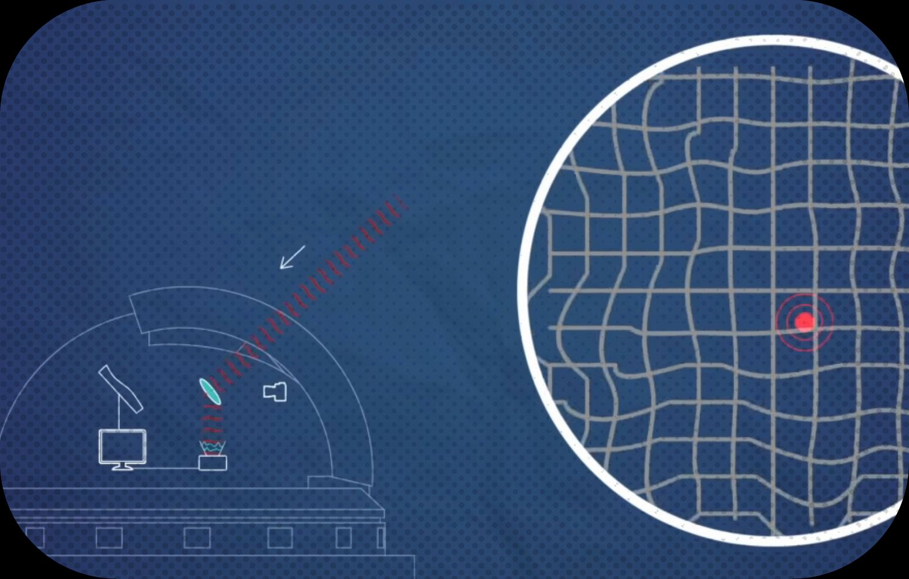

How Do You See An Exoplanet?
 Did you know we can actually take pictures of exoplanets? That we can take pictures of them over time and track their movement? Check out my blog post for Caltech Letters to get a glimpse of the history of telescope technology and how far we've come to now see planets around other stars. NOTE! There's a mistake in the article, and Beta Pic b was the first directly imaged exoplanet. It was not, and that honor goes to 2M1207 b. Check it out here
What Are Debris Disks?
 A lot of my work deals with studying debris disks. Ever wonder what a debris disk is? How do they form? How are they significant to finding planets?
Well, check out my blog post
A lot of my work deals with studying debris disks. Ever wonder what a debris disk is? How do they form? How are they significant to finding planets?
Well, check out my blog post
Pieces I'm Featured in
1. "Pulsars and Pretzels" by Emily Velasco on Pasadena's Astro on Tap.
2. "ASTRONOMERS DISCOVER ‘YOUNG JUPITER’ EXOPLANET". Stony Brook Press Release on new 51 Eri b discovery by the Gemini Planet Imager Exoplanet Survey team.
3. "A Newly discovered, Jupiter-like planet may sit in a solar system much like our own". Wash-po article on new 51 Eri b discovery by the Gemini Planet Imager Exoplanet Survey team.